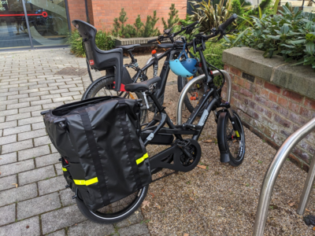

| Item | Cost | Supplier (source of quote) |
|---|---|---|
| E-cargo bike | 6,100 | Local bike shop (Edinburgh Bike Cooperative) |
| Tern Clubhouse+ carrier extension | 230 | Local bike shop (Edinburgh Bike Cooperative) |
| Tern Sidekick carrier extension | 140 | Local bike shop (Edinburgh Bike Cooperative) |
| Tern Storm Box cargo box | 230 | Local bike shop (Edinburgh Bike Cooperative) |
| Tern Cargo Lid Lock | 30 | Local bike shop (Edinburgh Bike Cooperative) |
| Burley Flatbed Cargo Bike Trailer | 300 | Local shop (Decathlon) |
| Bike lock (Next Generation Angle-Grinder Resistant Armoured D-Lock) | 150 | litelok.com |
| Secure storage shed | 2,731 | Local supplier (Asgard) |
| Battery charger | 94 | Online supplier (buyabattery.co.uk) |
| Battery storage system | 3,000 | Local solar panel installer (Solar Solutions Ltd TBC) |
| PV installation | 2,000 | Local solar panel installer (Solar Solutions Ltd TBC) |
| Total | 15,005 |
Ebike guide
1 Introduction
Chaco has 3 ebikes for communal use. These are shown in the photo below which includes:
- The ‘ecargo’, for shopping, towing trailers, and longer trips (middle)
- The ‘efoldy’, for short trips (max distance around 10 km) and folding for storage/public transport (right)
- The ‘Dutch’ ebike (name TBC) for general use (left)
The image above was taken form a video (see link below).
2 Ecargo
We have a Tern HSD (specifically the Tern HSD P5i Gen.2 Electric Cargo Bike, purchased from Edinburgh Bike Cooperative) for communal use.
The bike is a ‘compact’ electric cargo, weighing 27.9 kg (61.5 lb), meaning you may want to avoid steps when using it. It has a maximum recommended rider weight of 120 kg (264.6 lb) and a large rear rack capacity of 80 kg. It has a 545 Wh battery and a Bosch Performance Line motor, with a range of 51-121 km (32-76 mi). See specifications on the Tern website for more information.
2.1 Using it
It lives in the ‘Gladiator’ shed next to the recycling bins. To unlock it you need the 2 sets of keys on green fobs. These are kept in the key box.
To unlock the bike you need to:
- Unlock the shed
- Unlock the D lock and any other locks on the bike
- Unlock the bike-mounted lock on the rear wheel
Note: the bike-mounted lock snaps back when you unlock it. You need to push a ‘lever’ on the other side of the bike to lock it again. See video below for a demonstration of how to unlock the bike in the unlisted video at youtu.be/VrXsrW0D9sc.
Always lock the bike to a secure object with the grinder-proof ‘Litelok’ lock that lives inside the panniers, as shown in the photo below (taken from the bike’s first utility trip in Chaco).

2.2 Charging
If the bike has less than 50% charge after your ride, plug it in to charge after you’ve finished using it.
2.3 Additional information
- See the product page on Tern’s website
- See the manuals for the bike at Tern’s website
- See the manual for the display at bosch-ebike.come
3 Bid submission
We could afford the ecargo thanks to funding from the Leeds Community Climate Grant. Key bits from the bid submission are below:
Chapeltown Cohousing has substantial experience building sustainable community-led projects. Running for more than 20 years, with strong roots in Chapeltown, we have a track record of delivering. We successfully navigated the challenges of building 29 sustainable and affordable homes, and have built one of the most diverse and inclusive housing communities in the UK.
We have experience with solar PV and appropriate transport technology. We already have 49 kWp of solar PV installed on our south facing roofspace, providing around 1/3rd of our electricity needs, but would like to increase this. We have experience getting people to travel in more sustainable ways, with a successful car share meaning that we only need 14 parking spaces for 29 homes. We have a well-used e-bike and informally share bikes between ourselves and share our bike riding and maintenance skills with each other and the wider community, with two of our members involved in the Bike Fix Sunday project in Chapeltown, Back Newton Grove, just next to Potternewton Park.
We also have specific experience making use of e-cargo bikes, having borrowed one from Leeds City Council in early 2023, which was used frequently for shopping trips, moving furniture, and other short trips. We have learned that this is a popular and useful resource for our community, and we would like to make this a permanent feature of our community.
The aims are to:
- Replace short car trips with sustainable e-cargo trips in Leeds
- Enable people from diverse backgrounds to gain confidence with cycling for everyday trips that require carrying loads
- Demonstrate how renewable sources of power can combine with emerging sustainable technologies to provide zero-carbon mobility in our Chapeltown Cohousing and the wider community
We are seeking funding for:
- An e-cargo bike to facilitate sustainable transportation within our community.
- A secure storage shed for the e-cargo bike
- Solar PV panels on the south facing roof of our shared workshop
- Battery storage system to store electricity to charge the e-cargo bike, other ebikes, tools, batteries and also for garden equipment such as lawnmover and shredder.
- A smart battery charger for communal use
To assess the demand for an e-cargo bike within Chapeltown Cohousing, we conducted a survey of our community members. The results of the survey are shown in the table (see supporting documentation). The survey revealed that 14 out of 17 respondents would use an e-cargo bike at least once per month, with 7 respondents indicating that they would use it around once per month, 4 respondents indicating that they would use it 2-3 times per month, and 3 respondents indicating that they would not use it at all (see attached survey results).
This demonstrates a high demand for an e-cargo bike within our community.
We have researched options for e-cargo bikes and have found a suitable model from a local bike shop, Edinburgh Bike Cooperative. The Tern GSD S00 is ideal for our community’s needs. It’s cargo and passenger ready, with a rear rack capacity of 200kg, virtually maintenance free Shimano internal gears and Gates belt drive, and a powerful motor that will enable hilly trips to Lidl, Tesco (common trips for our members) or other destinations in Leeds.
The powerful motor will also help members who need to get into town via the new cycle infrastructure on Clay Pit Lane, which has a steep gradient. The bike’s quality will make it low-maintenance, which is important for our community members who may not have the time or skills to maintain a bike.
The following accessories are also required to get the most out of the e-cargo bike:
- Cargo box, including modular ‘Clubhouse+’ and ‘sidekick’ carrier extension: this will allow us to transport groceries, tools, and other items safely and securely.
- Cargo box lock: to secure the cargo box and its contents.
- Cargo bike trailer: this will allow us to transport larger items, such as furniture, and will be useful for moving items, the flatbed design offering maximum versatility.
- High quality bike lock: to secure the e-cargo bike when not in use.
We will install additional solar PV panels on the south facing workshop roofspace. This will increase our solar generation capacity, allowing us to generate more clean energy and further reduce our carbon emissions.
We will install a battery storage system to store the excess electricity generated. This will allow us to use the stored energy to charge the e-cargo bike even on cloudy days and overnight.
We are seeking funding for the total project cost of £15,004.97. The breakdown of the budget, including exact quotes from local companies, is provided below.